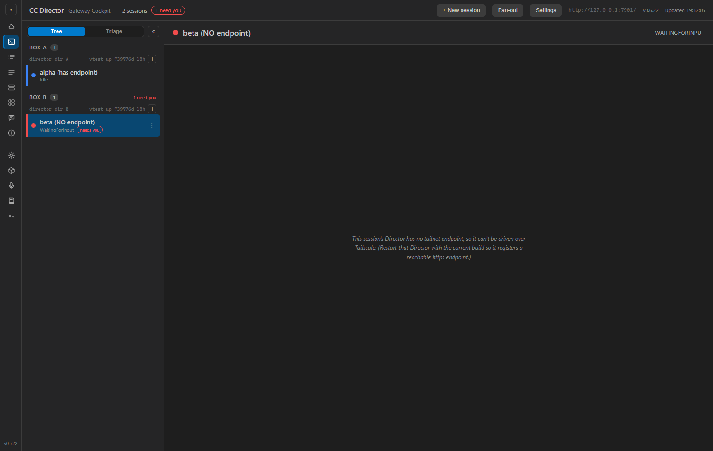
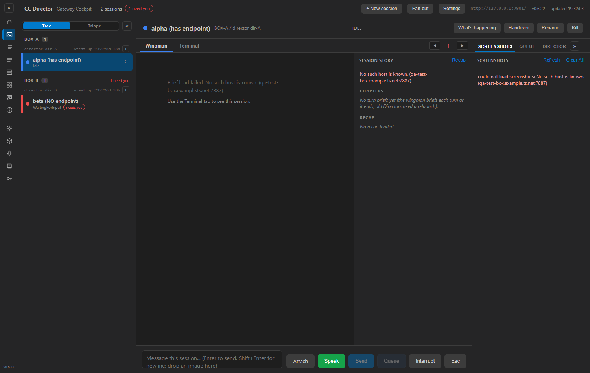
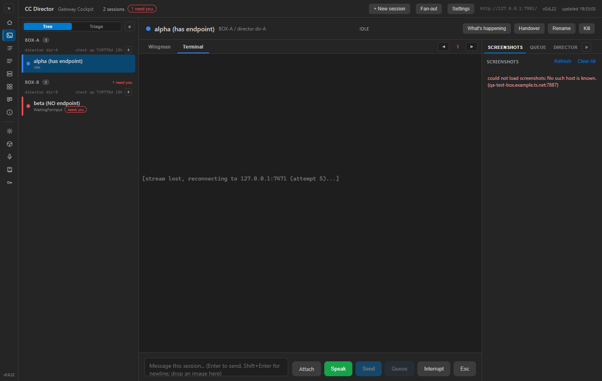

PR: #294 Branch: issue-199-cockpit-logging HEAD: 3aea2e0 (fix: emit blank-terminal WARNING from a reachable path)
This issue was previously bounced flow:qa-failed for criterion 4 (the empty-DirectorBase
WARNING was unreachable dead code in TerminalPane.OnAfterRenderAsync). The developer moved the
WARNING into Cockpit.OnSelect (the single selection funnel). I re-verified every
acceptance criterion independently - I did not assume the earlier-passing ones still hold.
Built cc-director.sln Debug myself (Build succeeded, 0 Warning(s), 0 Error(s)); ran the
Cockpit (cc-director-cockpit.exe) against an isolated
CC_DIRECTOR_ROOT and a stub Gateway serving two sessions - one WITH a tailnet endpoint, one
with an EMPTY endpoint (the blank-terminal failure mode). Drove the live Blazor UI with Playwright
(Chromium, localStorage.cockpit.debug=1) and read the persisted log + browser console. The
developer's binary, log, and screenshots were not reused.
| # | Criterion | Expected | Actual (my proof) | Result |
|---|---|---|---|---|
| 1 | Cockpit log file exists at canonical path with INFO lines. | cockpit-YYYY-MM-DD-<PID>.log under logs\cockpit with INFO content. | ...\logs\cockpit\cockpit-2026-06-10-293704.log created (CC_DIRECTOR_ROOT honoured);
startup banner INFO line + action INFO lines. Format
yyyy-MM-dd HH:mm:ss.fff LEVEL [category] message matches Director/Gateway. |
PASS |
| 2 | One INFO line per user action, each carrying sid + director endpoint. | select-session (with source), tab switch, etc., each with sid + dir. | INFO [Cockpit] Cockpit action=select-session source=rail sid=i199-real-0001 dir=http://qa-test-box.example.ts.net:7887 INFO [Cockpit] Cockpit action=center-tab sid=i199-real-0001 dir=http://qa-test-box.example.ts.net:7887 tab=term INFO [Cockpit] Cockpit action=select-session source=rail sid=i199-nodir-0002 dir= |
PASS |
| 3 | Terminal connect attempt + outcome logged server-side; ws open/close with code+reason in browser console under cockpit.debug=1. | Server-side connect attempt/dispatched; browser ws lifecycle gated by the debug flag. | Server-side:
INFO [TerminalPane] TerminalPane connect attempt sid=i199-real-0001 dir=... wsUrl=ws://127.0.0.1:7471/sessions/i199-real-0001/stream INFO [TerminalPane] TerminalPane connect dispatched sid=i199-real-0001 wsUrl=...Browser console (cockpit.debug=1): [cockpit-terminal] ws connect attempt ... attempt 1 [cockpit-terminal] ws error ... [cockpit-terminal] ws close ... code 1006 reason (none) [cockpit-terminal] ws reconnect scheduled ... attempt 2 in 1200ms(Default - flag off - the console stays quiet; verified gating in source.) |
PASS |
| 4 | The blank-terminal failure mode (empty DirectorBase / no connect) is visible in the persisted log. Proof: the WARNING line. | Selecting the endpoint-less session writes a WARNING; the endpoint-having session does not. | Selecting sid=i199-nodir-0002 (empty endpoint) produced, on the same selection:
INFO [Cockpit] Cockpit action=select-session source=rail sid=i199-nodir-0002 dir= WARN [Cockpit] Cockpit empty DirectorBase for sid=i199-nodir-0002 source=rail (rowState=WaitingForInput); session has no tailnet endpoint, live terminal cannot connect - blank-terminal failure modeSelecting the endpoint-having session (sid=i199-real-0001) produced its INFO line with NO following WARNING - the WARNING is specific to the endpoint-less case. The previously-unreachable code is now reachable from OnSelect. The defect is fixed. |
PASS |
Endpoint-having session renders the full detail (Wingman/Terminal tabs, composer, Screenshots/Queue/ Director panels) - normal governable state. Endpoint-less session shows the "no tailnet endpoint" guard. No layout/console regressions observed. 16 Cockpit tests pass; solution builds 0/0.



Evidence files: cockpit-qa.log (full persisted log), console-cockpit.txt
(captured browser console), screenshots above.